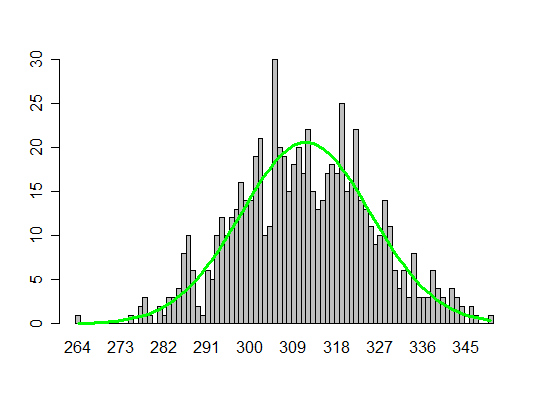

sim_adpcr(m, n, times, n_panels = 1, dube = FALSE, pos_sums = FALSE)
times argument.TRUE, the function is strict implementation of array
digital PCR simulation (as in Dube et al., 2008). If FALSE, the
function calculates only approximation of Dube's experiment. See Details and
References.TRUE, function returns only the total number of
positive (containing at least one molecule) chamber per panel. If
FALSE, the functions returns a vector of length equal to the number
of chambers. Each element of the vector represents the number of template
molecules in a given chamber.pos_sums argument has value FALSE, the function
returns a matrix with $n$ rows and $n_panels$ columns. Each column
represents one plate. The type of such simulation would be "nm". If the
pos_sums argument has value TRUE, the function returns a
matrix with one row and $n_panels$ columns. Each column contains the
total number of positive chambers in each plate and type of simulation would
be set as "tnp".
In each case the value is an object of the adpcr class.
A function that simulates results of an array digital PCR.
The array digital PCR is performed on plates containing many microfluidic chambers with a randomly distributed DNA template, fluorescence labels and standard PCR reagents. After the amplification reaction, performed independently in each chamber, the chambers with the fluorescence level below certain threshold are treated as negative. From differences between amplification curves of positive chambers it is possible to calculate both total number of template molecules and their approximate number in a single chamber.
The function contains two implementations of the array digital PCR
simulation. First one was described in Dube at. al (2008). This method is
based on random distributing $m * times$ molecules
between $n * times$ chambers. After this step, the
required number of plates is created by the random sampling of chambers
without replacement. The above method is used, when the dube argument
has value TRUE.
The second method treats the total number of template molecules as random
variable with a normal distribution $N(n,
0.05*n)$. The exact sum of total molecules per plate is calculated and
randomly adjusted to the value of $m * times$. The above
method is used, when the dube argument has value FALSE. This
implementation is much faster than previous one, especially for big
simulations. The higher the value of the argument times, the
simulation result is closer to theoretical calculations.
Dube S, Qin J, Ramakrishnan R, Mathematical Analysis of Copy Number Variation in a DNA Sample Using Digital PCR on a Nanofluidic Device. PLoS ONE 3(8), 2008.
# Simulation of a digital PCR experiment with a chamber based technology. # The parameter pos_sums was altered to change how the total number of positive # chamber per panel are returned. An alteration of the parameter has an impact # in the system performance. adpcr_big <- sim_adpcr(m = 10, n = 40, times = 1000, pos_sums = FALSE, n_panels = 1000) adpcr_small <- sim_adpcr(m = 10, n = 40, times = 1000, pos_sums = TRUE, n_panels = 1000) # with pos_sums = TRUE, output allocates less memory object.size(adpcr_big)520480 bytesobject.size(adpcr_small)211584 bytes# Mini version of Dube et al. 2008 experiment, full requires replic <- 70000 # The number of replicates was reduced by a factor of 100 to lower the computation time. replic <- 700 dube <- sim_adpcr(400, 765, times = replic, dube = TRUE, pos_sums = TRUE, n_panels = replic) mean(dube) # 311.5616[1] 311.1971sd(dube) # 13.64159[1] 14.11301# Create a barplot from the simulated data similar to Dube et al. 2008 bp <- barplot(table(factor(dube, levels = min(dube):max(dube))), space = 0)lines(bp, dnorm(min(dube):max(dube), mean = 311.5, sd = 13.59)*replic, col = "green", lwd = 3)
# Exact Dube's method is a bit slower than other one, but more accurate system.time(dub <- sim_adpcr(m = 400, n = 765, times = 500, n_panels = 500, pos_sums = TRUE))user system elapsed 0.45 0.00 0.50system.time(mul <- sim_adpcr(m = 400, n = 765, times = 500, n_panels = 500, pos_sums = FALSE))user system elapsed 0.44 0.00 0.45